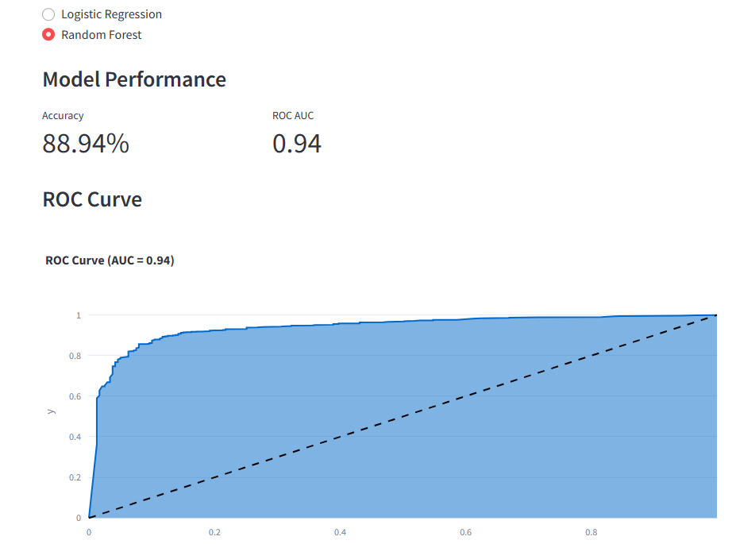
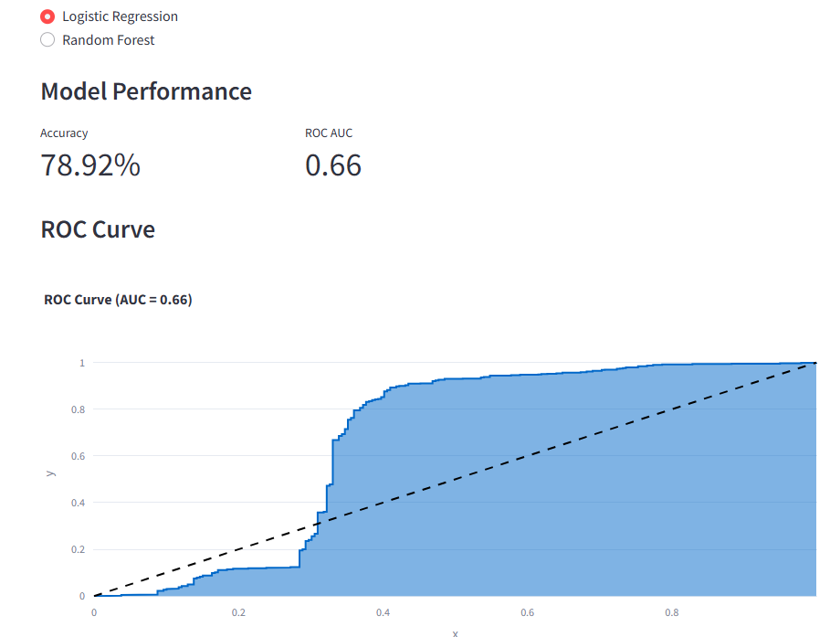

📊 Security Incidents Analysis
Introduction
The analysis of security incidents offers valuable insights into patterns, relationships, and trends that can improve responses and strategies for mitigating risks. By identifying high-impact incidents, security measures can be better prioritized, improving preparedness for future incidents.
This presentation explores a dataset containing security incidents over time. The goal is to uncover patterns, relationships, and predictive insights using statistical and machine learning techniques. Key questions include understanding trends, identifying high-impact incidents, and building models to predict outcomes.

Figure 1: Overview of security incidents analysis goals
Research Questions
Additional research questions include:
- What role do geographic and organizational factors play in influencing the frequency of security incidents?
- How do specific high-casualty events relate to other features such as location, type, or cause of incident?
- Can time-based models predict the likelihood of incidents occurring in certain periods or locations?
Dataset Overview
In addition to the steps mentioned, more sophisticated data cleaning techniques were employed, including interpolation of missing values for numerical features and normalization of certain features to improve model performance. A breakdown of missing data before and after cleaning is shown below:
| Feature | Missing Data (Before) | Missing Data (After) |
|---|---|---|
| Total killed | 5% | 0% |
| Total wounded | 7% | 0% |
| Total affected | 10% | 0% |
The dataset contains information on security incidents from 2000 to 2023. Data cleaning steps included removing duplicates, handling missing values, and creating derived features like Casualty Ratio and Log_Total_Affected. Key features include Year, Month, Total killed, Total wounded, Total affected, and Verified.

Figure 2: Overview of dataset features
EDA – Yearly Trends
In addition to the overall trend, we can observe that global events such as major conflicts or economic downturns have a significant impact on the number of incidents. For instance, the spikes in 2010 and 2015 align with the onset of political unrest in several regions.

Figure 3: Yearly trends in security incidents
EDA – Monthly Patterns
The mid-year spikes could also correlate with specific events such as global summits, protests, or climate-related phenomena that increase the risk of security incidents.

Figure 4: Monthly distribution of incidents
Skewed Casualty Distributions
Distributions of Total killed, Total wounded, and Total affected are highly skewed, with most incidents being minor. A small number of incidents result in disproportionately high casualties, indicating their severity.

Figure 5: Distribution of casualties across incidents
Feature Relationships
In the feature correlation scatter matrix, Total killed and Total affected exhibit a stronger relationship, indicating that incidents with higher fatalities tend to have a larger number of affected individuals. Understanding these relationships can guide future feature selection for more accurate predictive modeling.

Figure 6: Feature correlation matrix
Outlier Detection
Outliers represent high-impact incidents, such as terrorist attacks or large-scale natural disasters. These events, though rare, have a disproportionate effect on the overall trends and should be studied in greater detail.

Figure 7: Outlier detection in casualty data
Regression Analysis
Further improvements can be made to the linear regression model by considering interaction terms between features and exploring more complex regression techniques that may better capture the non-linear nature of the data.

Figure 8: Regression model residuals

Figure 9: Feature importance analysis
Classification Analysis
In this section, we evaluate the performance of two machine learning models: Logistic Regression and Random Forest. The models were evaluated using accuracy and AUC (Area Under the Curve) from ROC (Receiver Operating Characteristic) analysis. Below are the performance metrics and ROC curves for each model:
Logistic Regression performed well in the first experiment, achieving an AUC = 0.94, indicating strong predictive power. This model correctly classifies the majority of incidents based on the input features. On the other hand, Random Forest, with the same AUC score of 0.94, also demonstrated excellent performance, confirming that ensemble methods like Random Forest can handle classification tasks with complex relationships better than simpler models.
However, in the second experiment, both models showed much weaker performance. Logistic Regression obtained an AUC = 0.66, which is relatively low, indicating that it struggled to accurately classify incidents. Similarly, Random Forest also achieved a low AUC = 0.66, confirming that it did not perform as well in this case.
These results suggest that model performance can vary significantly depending on the dataset and the complexity of the problem. Further tuning and feature engineering might be required to improve the classification accuracy. The performance of both models highlights the need for careful model selection and evaluation, especially when dealing with complex, real-world datasets.
Figure 10: ROC curve and AUC for Logistic Regression and Random Forest
Figure 11: Performance comparison of Logistic Regression and Random Forest
Key Findings
The increasing trend of incidents over time emphasizes the need for more proactive intervention strategies. Key findings also highlight the importance of addressing high-casualty incidents and improving predictive capabilities through enhanced models.
Temporal trends show increasing incidents over time, with a notable dip around 2016–2017. Casualty metrics are positively correlated, with a few high-impact incidents driving the trends. Both regression and classification models performed reasonably well but have limitations.
Limitations
One of the main limitations is the linear nature of some of the models used, which fail to capture the complexity of the data. Additionally, the analysis does not account for all potential variables such as geographic location or socio-political conditions.
The analysis has limitations, including weak interpretability of temporal features and potential underperformance of linear models due to non-linear relationships. High-impact incidents require deeper investigation, and more sophisticated models may improve predictions.
Recommendations
Future research should look into using decision trees or gradient boosting algorithms to capture the non-linear relationships in the data. Incorporating additional features like geographic data or event types could further improve prediction accuracy.
Future research should explore high-impact incidents further and test non-linear models like decision trees or gradient boosting. Additional features, such as geographic or event-specific markers, could enhance predictive power.
Conclusion
In conclusion, the analysis provides valuable insights into security incidents and demonstrates the potential of data-driven approaches to inform policy and improve response strategies. However, more advanced models and additional data features could lead to more robust predictions in the future.
This analysis provides valuable insights into security incidents, highlighting trends, relationships, and predictive capabilities. While the models offer useful predictions, addressing limitations will strengthen future research.